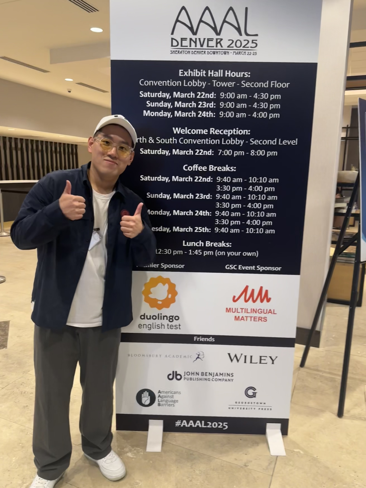

Work

My works are summarized below, with updates occurring roughly every six months.
Last updated on: June. 20, 2026.
For the most current information about publications, please visit my profiles on:
Google Scholar: https://scholar.google.com/citations?user=qBjT8w4AAAAJ&hl=en
ResearchGate: https://www.researchgate.net/profile/Chenghui-Wu-3?ev=hdr_xprf
ORCID: https://orcid.org/0000-0001-8694-5213
Funds & Awards:
[1] 2025 Peking Univeristy——SYLFF（The Ryoichi Sasakawa Young Leaders Fellowship Fund）[40,000 RMB]
More information: http://www.sylff.org/
[2] 2024 Rudolph J. Joenk, Jr. Award for Best Paper in the IEEE Transactions on Professional Communication
More information: https://procomm.ieee.org/awards/#joenk
Journal Articles:
[1] Wu, C., & Zhang, Y. (forthcoming). Genre Innovation of Modern Standard Operating Procedures: A Case Study from Chinese Organizations. Journal of Business and Technical Communication. (SSCI)
[2] Wu, C., & Chen, G. (2026). Variability within stability: A novel lexical multidimensional analysis of key keywords in China daily’s international reporting on China (2017–2024). English for Specific Purposes, 83, 276-290. https://doi.org/10.1016/j.esp.2026.05.003 (SSCI)
[3] Wu, C., & Li, Y. (2026). Shuttling between local and global scales: Transcultural agility of Chinese enterprises’ identity work on Twitter/X. Discourse, Context & Media, 71, Article 101018. https://doi.org/10.1016/j.dcm.2026.101018 (SSCI)
[4] Wu, C. (2026). An acceptance analysis of firms’ posts on Sina Weibo to build credibility. Journal of Business and Technical Communication, 40(2), 129-166. https://doi.org/10.1177/10506519251404893 (SSCI)
[5] Su, Y., Wu, C., Xu, H. (2026). The rise of professional obfuscation: A diachronic analysis of abstract readability in China’s foreign linguistics journals (2004–2023), IEEE Transactions on Professional Communication, 69(2), 201-221. https://doi.org/10.1109/TPC.2026.3686899 (SSCI)
[6] Zhang, Y., Wu, C., & Zhang, J. (2026). Stances on Environmental Sustainability: A Corpus-assisted Study of Sustainability Reports by US and Chinese Energy Giants. International Journal of Business Communication, [Online First]. https://doi.org/10.1177/23294884261418222 (SSCI)
[7] Li, Y., Wu, C., Yu, L., & Shi, H. (2026). Constructing HIV/AIDS in Chinese Media (2011-2024): A Mixed-Methods Study. PLoS ONE, 21(5), Article e0349242. https://doi.org/10.1371/journal.pone.0349242 (SCI)
[8] Xu, H., Li, Y., Li, H., & Wu, C. (2026). Stylistic Changes of Academic Discourse in Chinese Foreign Linguistics: A Diachronic Analysis of Thematic Evolution, Syntactic Complexification, and Evaluative Positivization in CSSCI-listed Journal Abstracts (2004-2023). SAGE OPEN, 16(1). https://doi.org/10.1177/2158244026142080 (SSCI)
[9] Wu, C., & Sun, Y. (2025). “Presenting myself with readers in texts”: Analyzing evidentiality in the credibility-building discourse for Chinese state-owned enterprises on Twitter/X. International Journal of Business Communication, [Online First]. https://doi.org/10.1177/23294884251367392 (SSCI)
[10] Wu, C., Zhang, Y., & Li, Y. (2025). Only business, no politics: a triangulated discursive analysis of business newsletters of China’s Belt and Road on domestic social media. Humanities and Social Sciences Communications, 12, Article 1466. https://doi.org/10.1057/s41599-025-05029-x (SSCI, AHCI)
[11] Yu, L., Li, Y., & Wu, C. (2025). Cancer framing and psychological characteristics in online cancer diaries: a mixed-methods study in China. Social Science & Medicine, 377, 118120. https://doi.org/10.1016/j.socscimed.2025.118120 (SSCI, SCI)
[12] Wu, C., & Sun, Y. (2023). Discursive construction of message credibility for Chinese State-owned Enterprises on Twitter. IEEE Transactions on Professional Communication, 66(3), 236-258. https://doi.org/10.1109/Tpc.2023.3284775 (SSCI)
Book Reviews:
[1] Su, Y., & Wu, C. (2025). Book Review: Dismantling Cultural Borders Through Social Media and Digital Communications: How Networked Communities Compromise Identity, edited by Emmanuel K Ngwainmbi. Critical Studies in Media Communication, 42(5), 612–614. https://doi.org/10.1080/15295036.2025.2610008 (SSCI)
[2] Wu, C. (2025). Book review: Effective Climate Communication: Turning Eco-Anxiety into Eco-Action by Anastasia Denisova (Editor). European Journal of Communication, 40(4), 439-441. https://doi.org/10.1177/02673231251356844 (SSCI)
[3] Wu, C., & Su, Y. (2024). Book Review: Social Media Marketing for Business: Scaling an Integrated Social Media Strategy Across Your Organization by Jenkins, A. International Journal of Business Communication, 61(1), 181-183. https://doi.org/10.1177/23294884231208352 (SSCI)
[4] Wu, C. (2023). Book Review: Ole Schützler and Julia Schlüter (ed.), Data and Methods in Corpus Linguistics: Comparative Approaches. Discourse Studies, 25(6), 854-855. https://doi.org/10.1177/14614456231185404 (SSCI)
[5] Wu, C., & Sun, Y. (2023). Book Review: Mixed Methods Perspectives on Communication and Social Media Research. New Media & Society, 25(11), 3191-3193, https://doi.org/10.1177/14614448231185896 (SSCI)
[6] Wu, C. (2023). Book Review: The Fundamental Principles of Corpus Linguistics. Tony McEnery and Vaclav Brezina. Digital Scholarship in the Humanities, 38(2), 916–917, https://doi.org/10.1093/llc/fqad031 (SSCI)
[7] Wu, C. (2023). Book Review: Research Methods for Digital Discourse Analysis by Camilla Vásquez. European Journal of Communication, 38(5), 523-526. https://doi.org/10.1177/02673231231196949 (SSCI)
[8] Wu, C. (2023). Book Review: Stella Bullo and Derek Bousfield, Talking in Clichés: The Use of Stock Phrases in Discourse and Communication. Discourse & Communication, 17(6), 843-845. https://doi.org/10.1177/17504813231210092 (SSCI)
[9] Wu, C. (2023). Book Review: The Routledge Handbook of Corpus Linguistics (2nd Edition). Corpus Pragmatics, 7, 153-157. https://doi.org/10.1007/s41701-023-00141-2 (ESCI)
Conferences:
[1] Wu, C. “The Rise of Professional Obfuscation: A Diachronic Analysis of Abstract Readability in China’s Foreign Linguistics Journal (2004-2023)”, presented in the 8th International Conference of the Asia-Pacific LSP & Professional Communication Association (LSPPC8), December 13th 2025, City University of Hong Kong, Hong Kong, China. [Offline Oral Presentation]
[2] Wu, C. “A Small Dictionary with Big Roles: A Compact Lexicon for the Computational Thematic Analysis of Credibility-Building Discourse on English-language Social Media”, presented in the 14th Academic Forum for Postgraduate Students of the School of Foreign Languages, Renmin University of China (中国人民大学外国语学院第十四届研究生学术论坛), December 7th 2025, Renmin University of China, Beijing, China. [Offline Oral Presentation]
[3] Wu, C. “Mediating Complexity, Orchestrating Collaboration: Reconceptualizing Modern Standard Operating Procedures as a Hybrid Genre in Chinese Organizations”, presented in the 2025 National Forum on Foreign Language Teaching and Research for Doctoral Students (2025全国外语教学与研究博士生论坛), November 30th 2025, Nankai University, Tianjin, China. [Offline Oral Presentation]
[4] Wu, C. “Two Sides of the Same Coin: A Multi-Stakeholder Perspective on Discoverability and Promotionality in a Comparison of Scholar-Authored vs. AI-Generated Keywords from the Chinese Social Sciences”, presented in the 2025 Shanghai University School of Foreign Languages Young Scholars Forum (2025年上海大学外国语学院青年学者论坛), November 15th 2025, Shanghai University, Shanghai, China. [Offline Oral Presentation]
[5] Xu, H., & Wu, C. “Dynamic framing of the COVID-19 pandemic in Chinese international media: a corpus-assisted stance analysis of China Daily (2020-2024) (中国国际媒体对新冠疫情的动态框架建构：《中国日报》的语料库辅助立场分析（2020-2024年）)” presented in the 2025 Zhejiang University School of Foreign Languages Doctoral Student Academic Innovation Forum (浙江大学外国语学院2025年“格物致知”博士生学术创新论坛), October 26th 2025, Zhejiang University, Hangzhou, China. [Offline Oral Presentation, the Best Paper Award in the Linguistics Session]
[6] Wu, C. “Intelligent Choice vs. Artisanal Selection: A Cross-Disciplinary Comparative Study of Paper Keywords Written by Scholars and Generated by Large Language Model (“智”选与“匠”择：学者撰写与大语言模型生成论文关键词的跨学科对比研究)”, presented in the Fourth Nanjing University Graduate Student Forum on Innovation in Foreign Languages and Literatures (第四届南京大学外国语言文学研究生学术创新论坛), August 20th 2025, Nanjing University, Nanjing, China. [Online Oral Presentation, the Best Paper Award in the AI and Corpus Linguistics Session]
[7] Wu, C. “Are Standard Operating Procedures (SOPs) still merely ‘simple procedures’? (标准作业程序（SOPs）还仅仅是“简易程序”吗？)”, presented in The 3rd International Symposium on Functional Linguistics and Foreign Language Education (第三届功能语言学与外语教育国际学术研讨会), July 5th 2025, University of Science and Technology Beijing, Beijing, China. [Offline Oral Presentation]
[8] Wu, C. “An Acceptance Analysis of Firm-generated Credibility-building Posts on Sina Weibo”, presented in the 26th Warwick International Conference in Applied Linguistics, June 17th 2025, University of Warwick, Coventry, UK. [Online Oral Presentation]
[9] Wu, C. “Stylistic Changes of China’s Academic Discourse in Linguistic Abstracts from CSSCI-listed Journals (2004-2023): A Diachronic Analysis of Thematic Evolution, Syntactic Complexification, and Evaluative Positivization”, presented in the 2025 High-level Academic Forum for Postgraduate Students of Beijing Foreign Studies University (2025北京外国语大学研究生高端学术论坛), June 14th 2025, Beijing Foreign Studies University, Beijing, China. [Offline Oral Presentation]
[10] Wu, C. “A Corpus-based Study on the 'Unaltered' Discourse of China's External Publicity Media in the New Era of Socialism with Chinese Characteristics (基于语料库的中国特色社会主义新时代外宣媒体的“不变”话语研究)”, presented in the 2025 Lushan Forum for Postgraduate Students on Language and Culture (2025年湖南师范大学“麓山语言与文化研究生论坛”), May 24th 2025, Hunan Normal University, Changsha, China. [Online Oral Presentation, the Best Paper Award in the Linguistics Session]
[11] Wu, C. “Presenting Myself with Readers in Texts: Analyzing Textual Evidentiality in the Credibility-building Discourse for Chinese State-owned Enterprises on Twitter/X”, presented in the 2025 American Association for Applied Linguistics (AAAL) Conference, March 24th, 2025, Denver, CO, USA. [Offline Oral Presentation]
[12] Wu, C. “Only Business, No Politics: A Triangulated Discursive Analysis of Business Newsletters of China’s Belt and Road on Domestic Social Media”, presented in the First Greater Bay Area High-end Forum on Foreign Language Studies (首届⼤湾区外语学科⾼端论坛), December 8th 2024, Zhuhai Campus of Beijing Normal University, Zhuhai, Guangdong, China. [Offline Oral Presentation]
[13] Wu, C. “A Study on Expressive Speech Acts on Corporate Social Media from the Perspective of a Positive Pragmatic Turn (积极语用观转向下的企业社交媒体表达性言语行为研究)”, presented in the 13th Academic Forum for Postgraduate Students of the School of Foreign Languages, Renmin University of China (中国人民大学外国语学院第十三届研究生学术论坛), December 7th 2024, Renmin University of China, Beijing, China. [Online Oral Presentation]
[14] Wu, C. “My Words Have Credible Sources: Analyzing Evidentiality in the Credibility-Building Discourse for Chinese State-Owned Enterprises on Twitter/X (言之有据：中国央企推特/X上信任建设话语中的言据性研究)”, presented in the 2024 Tsinghua National Image Forum (2024清华国家形象论坛), November 9th 2024, Tsinghua University, Beijing, China. [Offline Oral Presentation]
[15] Wu, C. “Cultural Values Adapted to Individualism & Collectivism by Chinese Corporations on Twitter,” presented online in the 73rd Annual ICA Conference: Post-Conference ‘Authenticity and Transcultural Communication’, May 30th 2023, Toronto, Canada. [Online Oral Presentation]
[16] Sun, Y., & Wu, C. “Discursive Construction of Message Credibility for Chinese State-Owned Enterprises on Twitter,” presented online in the TAW 2023: Talking Across the World & Business and professional communication in a changing world, May 17th-18th, 2023, Hong Kong, China. [Online Oral Presentation]
[17] Wu, C. “A Corpus-based Multidimensional Analysis of Register Variations in the English Translation of "A Dream of the Red Mansions" from the Perspective of Skopos Theory (目的论视角下的基于语料库的《红楼梦》英文全译本语域变异多维分析), presented in the 5th China Corpus Linguistics Conference: Ideas and Techniques (第五届中国语料库语言学大会：思想与技术), Nov 16th-17th 2022, Shanghai, China. [Online Oral Presentation]